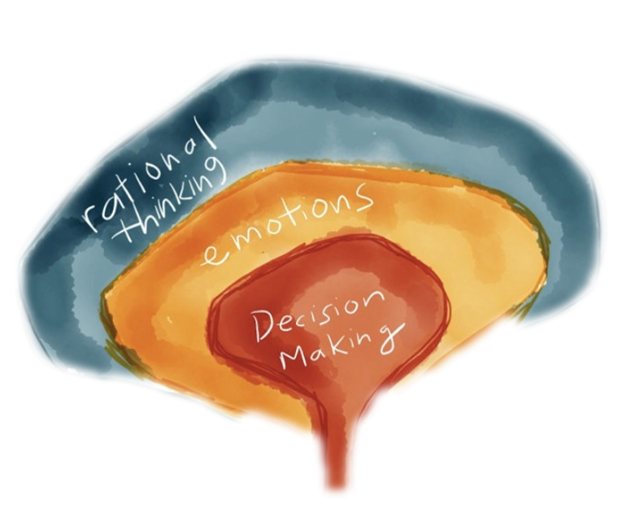

LAS EMOCIONES CON LA SALUD MENTAL

Humanizar al humano en la atención, la intercción, es un reto que la tecnologia hoy en diía tiene, Voice Feeling consigue un balance adecaudo para que ninguna .
Un Arquitecto diseña casas, un Ingeniero las construye, Un chef prepara recetas un Mesero atiende a los clientes, Las empresas construyen negocios Voice Feeling los Humaniza.
Cuando el soporte dejo de ser el soporte y se convirtio en un reproche, Reproche al estilo de la conversación, de la forma en que se transmite la informacion y el poco interes para entender a su interlocutor; premisas como pocas palabras, mucha emocion y escucha consciente se entrenan para conseguir que nuestro cerebro logre detectar los aspectos mas importantes a la hora de persuadir a otros.
 Un proceso
organizado, realizado con experiencia y juntando lo que cada interacción implica, es
la
receta para
contemplar los aspectos mas relevantes a la hora de poner en marcha planes de mejora en las
organizaciones ayudadados por la tecnologia .
Un proceso
organizado, realizado con experiencia y juntando lo que cada interacción implica, es
la
receta para
contemplar los aspectos mas relevantes a la hora de poner en marcha planes de mejora en las
organizaciones ayudadados por la tecnologia .
 Nuestro cerebro ya nos da pistas de como se basan nuestras decisiones y no solamente como un instrumento de programación , sino como un instrumento de consciencia y de uso en los momentos de mayor tensión y prueba en la que los seres humanos nos vemos envueltos, que harias si un león te ataca? mi vision como biologo o como ingeniero tendria una reacción distinta y al final todo se resume en el interes emocional que este objeto me trae.
 Y si nuestro personal no
cuenta con la experiencia para hacer que el equipo responsa?, Que bueno que
si contamos con elementos de orientación a la forma de guiarlos esto nos ayude a generar un
vinculo
y al mismo tiempo responsabilidades en los resultados.
Y si nuestro personal no
cuenta con la experiencia para hacer que el equipo responsa?, Que bueno que
si contamos con elementos de orientación a la forma de guiarlos esto nos ayude a generar un
vinculo
y al mismo tiempo responsabilidades en los resultados.